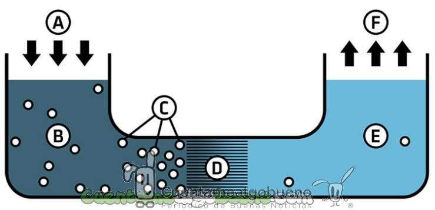

Batería de agua salada: Eficiencia, sostenibilidad y futuro.
¿Que es una bateria de agua salada?
Es un tipo de almacenamiento de energía que utiliza agua salada como uno de sus componentes claves para la descarga de energía.
Funcionamiento basico.
En lugar de usar ácidos o álcalis como electrolitos, las baterías de agua salada utilizan soluciones de agua salada. La sal en el agua actúa como el electrolito, facilitando la conducción de iones entre los electrodos, estas baterías generalmente emplean electrodos hechos de materiales no tóxicos y abundantes, como el carbono o ciertos compuestos metálicos, que reaccionan con el electrolito para almacenar y liberar energía.
Durante la carga y descarga, las reacciones electroquímicas entre el electrolito salino y los electrodos permiten la transferencia de electrones, lo que genera un flujo de corriente eléctrica. Estas baterías se componen de dos electrodos, uno positivo y otro negativo, sumergidos en una solución de agua salada. Cuando la batería está en funcionamiento, los iones de sal en el agua se descomponen en iones positivos y negativos. Los iones positivos migran hacia el electrodo negativo, mientras que los iones negativos migran hacia el electrodo positivo. Este flujo de iones crea una corriente eléctrica que puede ser utilizada para alimentar dispositivos electrónicos.